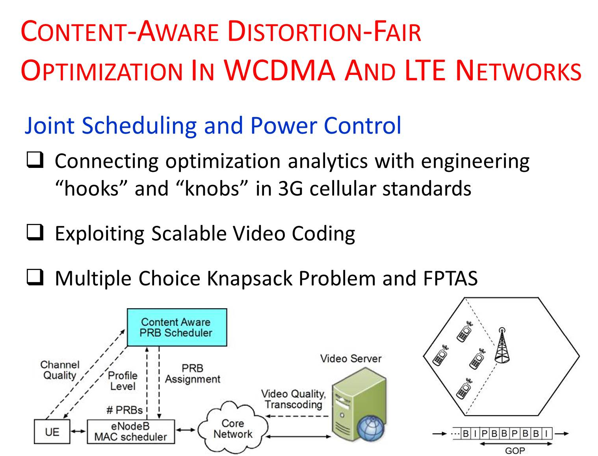
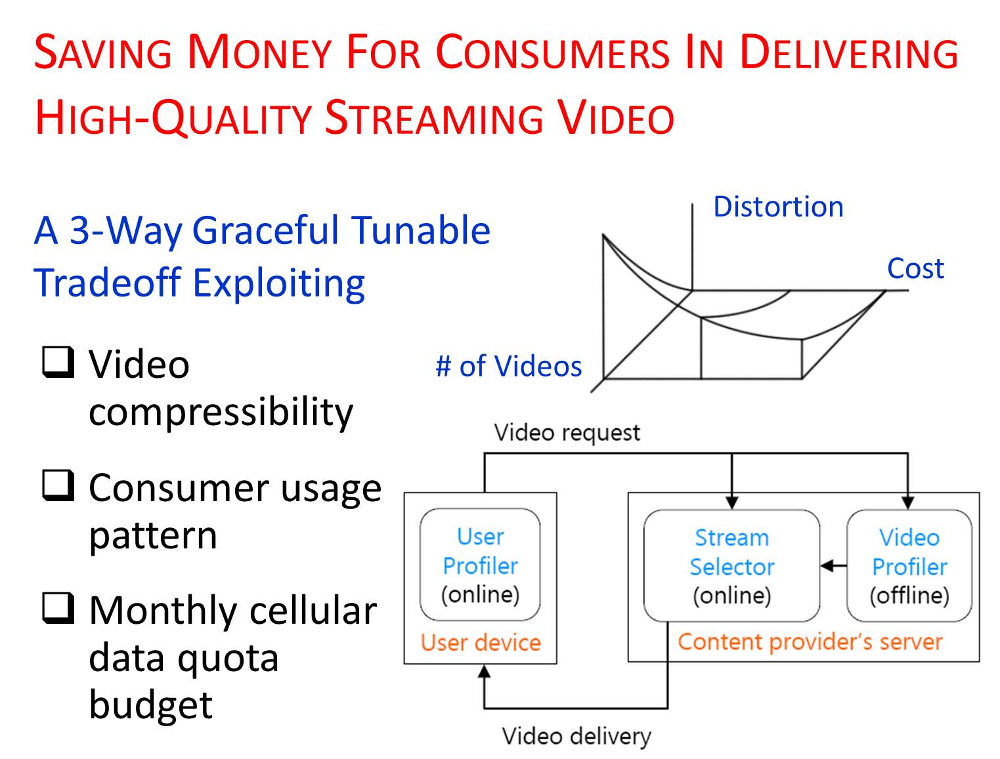
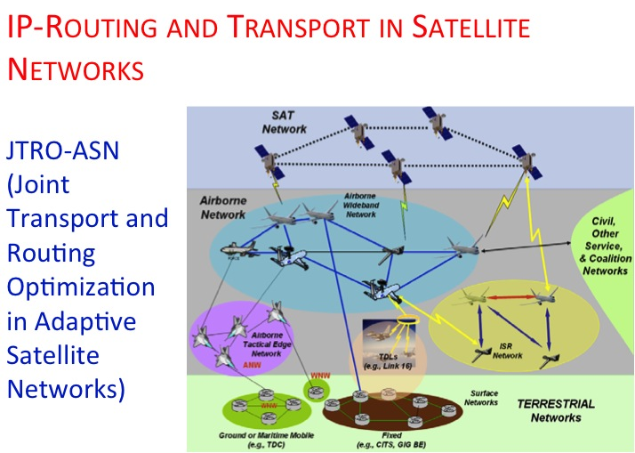
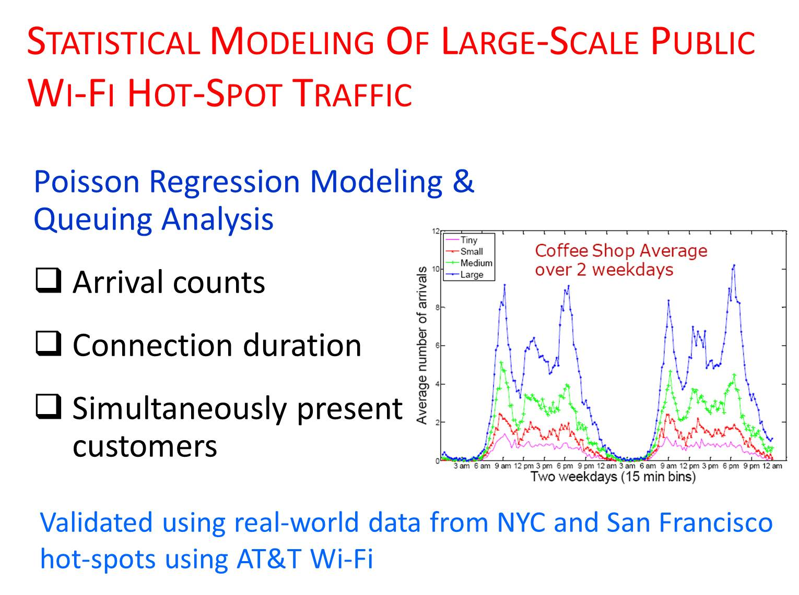
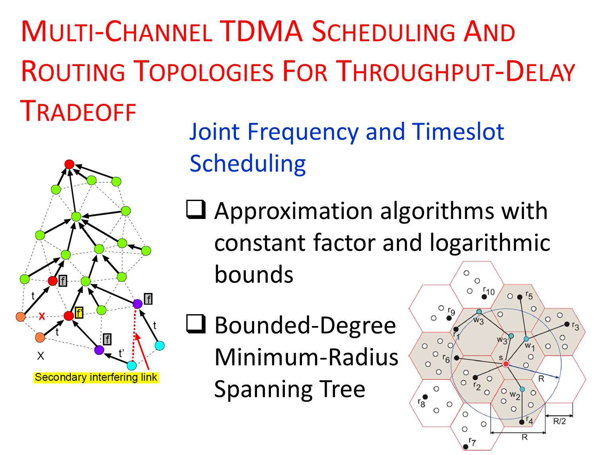
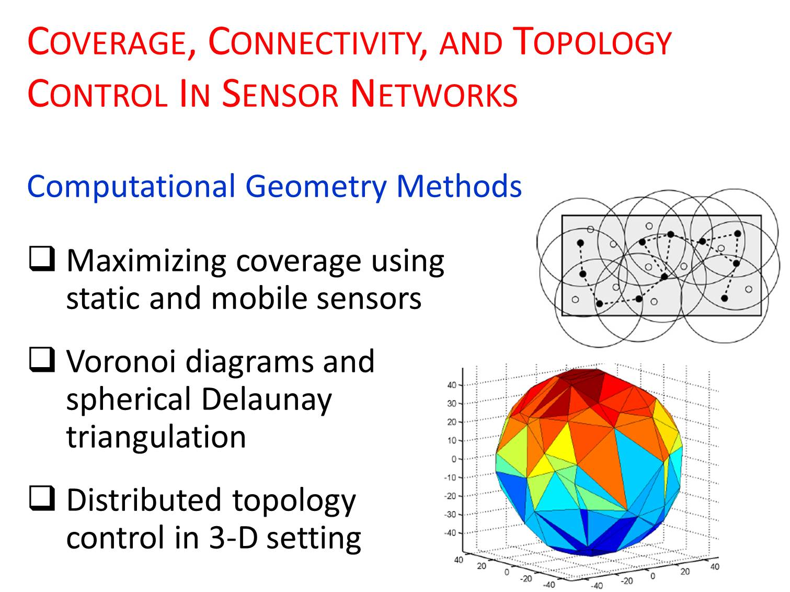

Video Delivery in Cellular Networks
How can cellular networks use what's inside a video stream — not just treat it as generic bits — to deliver better quality under constrained bandwidth?
As the Internet becomes increasingly popular for sharing multimedia content, we observe a widening gap between how content is produced/distributed and how it is transported over the network. Content-providers assume that the communication pipes are dumb, whereas pipe-providers assume that all bits are equal, thus creating a content-pipe divide.
Content-aware networking refers to the methodology of utilizing the rate-distortion (RD) characteristics of the content to design more adaptive and efficient network protocols. In this work, we consider cellular networks (WCDMA and LTE) and develop techniques to exploit content characteristics (e.g., video encoding, frame type, GOP structure) for allocating resources based on the importance of video packets. Our techniques are validated by real-world measurement data from ATT and TMobile networks, and by testbed experiments on reconfigurable software defined radios (WARP boards).

QAVA: Quota Aware Video Adaptation
How can a video app keep users happy without blowing through their monthly data quota?
Video traffic — Netflix, YouTube, Hulu, and embedded webpage video — is surging on both wireline and wireless Internet, just as ISPs like ATT Mobility and Verizon Wireless began capping unlimited data plans and charging per GB beyond a baseline quota. These two trends are at odds: video consumes more data than ever, while usage-based pricing punishes exactly that.
We built QAVA, a Quota Aware Video Adaptation solution that leverages the compressibility of video and profiles a consumer's usage behavior over a billing cycle. QAVA lets a consumer watch more video under a target monthly budget while maintaining a target video quality — or save money with minimal impact on quality.
Traffic Management in Data Center Networks
How should a data center's backbone jointly control rate, routing, and scheduling at the scale of a company like Google?
Large online service providers (OSPs) — Google, Yahoo!, Microsoft — build private backbone networks to interconnect data centers across geographies, carrying multiple classes of traffic with diverse performance objectives. Unlike a traditional ISP, an OSP controls both the hosts and the routers, offering the flexibility to jointly optimize rate control, backbone routing, and link scheduling.
Motivated by centralized traffic engineering approaches like Google's B4 software-defined WAN, we present two semi-centralized architectures that scale by distributing computation across multiple tiers using a few management controllers. Using optimization decomposition, we show both designs are provably optimal, with a tradeoff between convergence rate and message passing.

IP-Routing and Transport in Satellite Networks
How do you route data efficiently across satellites in different orbits without leaning on ground stations for every hop?
Efficient routing strategies combined with robust transport protocols are paramount in new-generation satellite networks spanning diverse constellations at different orbits. Compared to older bent-pipe satellite systems with no onboard IP-routing, newer generations offer a lot more flexibility — but require investigating cross-layer approaches for heterogeneous GEO + LEO satellite networks.
We propose JTRO-ASN, a joint transport and IP-routing optimization framework for adaptive satellite networks. It establishes end-to-end routes in space using inter-satellite and inter-level SATCOM links, with reduced ground station dependencies, decreased end-to-end latencies, and support for traffic prioritization across multiple available routes.

Wi-Fi Traffic Modeling in Public Hot-Spots
What does a coffee shop's Wi-Fi traffic actually look like — and can it be modeled well enough to plan capacity?
The ubiquitous deployment of wireless hot-spots — coffee shops, book stores, malls, hotels — has drawn millions of users onto smaller coverage footprints at considerably higher bandwidth. Prior "workload characterization" studies were mostly limited to laboratory conditions or short-term monitoring at conferences, leaving public, unregulated hot-spots poorly understood.
We developed a common modeling framework to characterize customer arrival patterns, connection durations, and the number of simultaneously present users. We combine statistical clustering with Poisson regression to fit a non-stationary Poisson process to arrivals, and model the heavy-tailed distribution of connection durations via a Phase Type distribution — validated on real AT&T hot-spot data from New York City and San Francisco.

Fast Data Collection in Sensor Networks
How fast can a sensor network gather data from every node without collisions or wasted energy?
Fast and periodic collection of aggregated data is of considerable interest for mission-critical and continuous monitoring applications — target tracking, structural health monitoring, health care — that demand efficient, timely collection of large data volumes despite low sensor-radio bandwidth, wireless contention, and limited power.
We designed efficient algorithms for scheduling across multiple orthogonal frequency channels, transmission power control, and constructing optimal routing topologies for what we call "convergecast." We demonstrate the throughput-delay trade-offs inherent to this process, and prove several worst-case performance bounds using graph theoretic tools.
Applications of Sensor Networks
Can inexpensive sensors reliably monitor a bridge's health or guide drivers to an open parking spot?
Wireless sensor networks have inspired tremendous research interest across smart homes, marine life monitoring, security-surveillance, healthcare, and automotive applications. We focus on two: structural health monitoring (SHM) and an intelligent parking lot guidance system.
For SHM, we design an optimal sensor placement strategy using mode shape analysis and an energy-efficient routing scheme, balancing estimation accuracy against the cost of data collection — motivated by real bridge-collapse catastrophes underscoring the need for reliable monitoring. For parking, we show that a combination of magnetic and ultrasound sensors can accurately detect vehicles, validated through a car-counting experiment in a multi-storied university parking structure lasting over a day.

Computational Geometry Methods
How do you guarantee a sensor network stays connected — even in three dimensions — using as little transmit power as possible?
Effective network coverage, connectivity, and topology control are fundamental to any sensor network. Coverage-connectivity means deploying an optimal number of sensors at strategic locations so the network stays connected and can route data to a sink; topology control means adjusting transmit power to reduce interference. Existing 2-D techniques don't work in 3-D, due to the lack of directional node ordering and higher algorithmic complexity.
We use computational geometry tools — Voronoi diagrams, orthographic projections, and spherical Delaunay triangulation — for effective coverage, connectivity, and distributed topology control, including one of the first approaches to opportunistically deploy both static and mobile nodes in a hybrid sensor network.